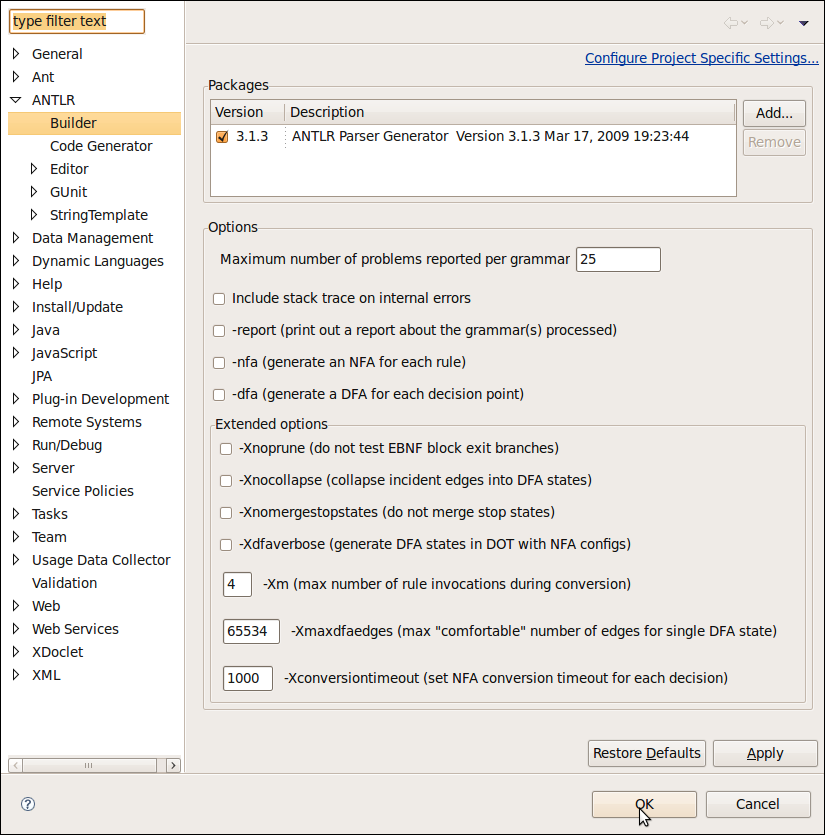

In this section, you will learn more about the ANTLR Builder.
Window > Preferences > ANTLR > Builder preferences page
Project > Properties > ANTLR > Builder project preferences page

The Packages option let you select the ANTLR Parser Generator to use. ANTLR IDE will build, generate code, run and debug your grammar with the runtime selected here. For more information see Define an ANTLR package
Note: This option doesn't copy or sync the ANTLR runtime with your project, if you select the 3.1.2 version your project will be use the same version.